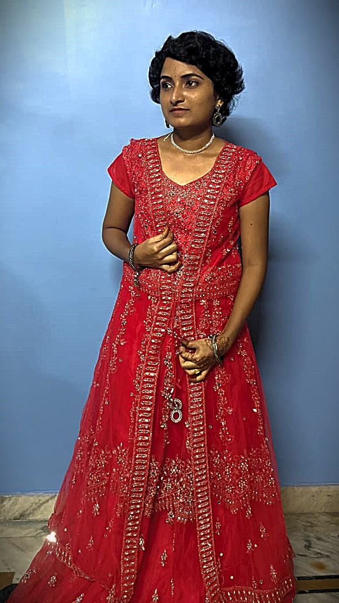

Hello, my name is Rudroju Soumya. I am currently pursuing my B.Tech in Computer Science and Engineering at Vaagdevi Engineering College, Warangal. I have a strong interest in problem-solving and software development, with skills in C++, Java, Python, and HTML. During my academics, I have worked on projects such as Early Prediction of Chronic Kidney Disease using Python and HTML, and Garbage Classification using Deep Learning with CNNs, which helped me gain hands-on experience in applying technology to real-world problems. I am proficient in tools like MS Office and possess strong qualities such as time management, adaptability, and quick learning. I am also a good communicator and enjoy working in team-oriented environments. My career goal is to secure a challenging position where I can contribute my knowledge and skills to the growth of the organization while continuously improving my professional abilities.